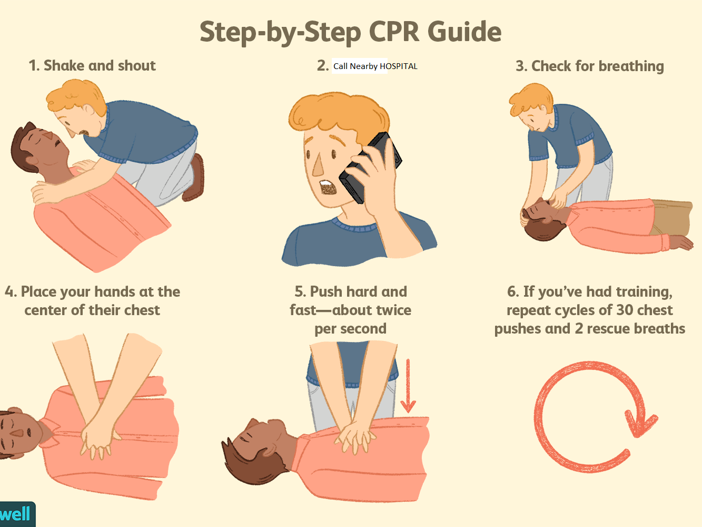

What are we suposs to to when we see a person bitten by a snake
Tie, a bandage proximal to the wound, don't suck the poison, Don't apply any oinment,Look For the doctor(Anti-Snake Venom) ASAP

Wash The Wound, of The dog bite with soap and fresh water (For Approx. 30 minutes) don't cover the wound, Don't Tie Bandage, After First AID, Consult a doctor/hospital near you,get a anti-rabies vaccine as soon as possible

A blockage of blood flow to the heart muscle. A heart attack is a "medical emergency". A heart attack usually occurs when a blood clot blocks blood flow to the heart. Without blood, tissue loses oxygen and dies. Symptoms include tightness or pain in the chest, neck, back or arms, as well as fatigue, lightheadedness, abnormal heartbeat and anxiety. Women are more likely to have atypical symptoms than men.
Cardiopulmonary resuscitation is an emergency procedure that combines chest compressions often with artificial ventilation in an effort to manually preserve intact brain function until further measures are taken to restore spontaneous blood circulation and breathing in a person who is in cardiac arrest.
Drowning is a type of suffocation induced by the submersion or immersion of the mouth and nose in a liquid. ... An incident of drowning can also cause further complications for victims due to low body temperature, aspiration of vomit, or acute respiratory distress syndrome (respiratory failure from lung inflammation).

Cardiopulmonary resuscitation is an emergency procedure that combines chest compressions often with artificial ventilation in an effort to manually preserve intact brain function until further measures are taken to restore spontaneous blood circulation and breathing in a person who is in cardiac arrest.

First-level burns are mild (like most sunburns). The top layer of skin (epidermis) turns red and is painful but doesn't typically blister.
Second-level burns affect skin's top and lower layers (dermis).
Third-level burns affect all three skin layers: epidermis, dermis and fat.
Fourth Level Lead to death
Burns are caused by dry heat from a fire, hot iron, or stove. A burn caused by something wet — like steam or hot water — is called a scald.
Hot water scalding can cause pain and damage to the skin from moist heat or vapors. This type of burn can be dangerous because it destroys affected tissues and cells. Your body may even go into shock from the heat. In more serious cases, these burns can be life-threatening.

A thermal burn is a type of burn resulting from making contact with heated objects, such as boiling water, steam, hot cooking oil, fire, and hot objects. Scalds are the most common type of thermal burn suffered by children, but for adults thermal burns are most commonly caused by fire.
Take off jewelry, belts, and tight clothing. Burns can swell quickly.
Hold burned skin under cool (not cold) running water or immerse in cool water until the pain subsides.
Use compresses if running water isn't available.
Cover with sterile, non-adhesive bandage or clean cloth.
Do not apply butter, oil, lotions, or creams (especially if they contain fragrance). Apply a petroleum-based ointment two to three times per day.
Give over-the-counter pain reliever such as acetaminophen (Panadol, Tylenol), ibuprofen (Advil, Motrin, Nuprin), or naproxen (Aleve, Naprosyn).
Shift the patient to a burn ward in a hospital "AS SOON AS POSSIBLE"

An electrical burn is a skin burn that happens when electricity comes in contact with your body.
When electricity comes in contact with your body, it can travel through your body. When this happens, the electricity can damage tissues and organs. This damage can be mild or severe – and it can even cause death
Apply Ice Pack, Put your hands in running water, AND SHIFT THE PATIENT TO hospital "AS SOON AS POSSIBLE"

A chemical burn occurs when your skin or eyes come into contact with an irritant, such as an acid or a base. Chemical burns are also known as caustic burns. They may cause a reaction on your skin or within your body. These burns can affect your internal organs if chemicals are swallowed. You should immediately check your mouth for cuts or burns if you swallow a chemical. You should also call a local poison control center or go to the emergency room right away if you swallow a chemical.
Acids and bases cause most chemical burns. Burns caused by chemicals can happen at school, work, or any place where you handle chemical materials.
the length of time your skin was in contact with the chemical
whether the chemical was inhaled or swallowed
whether your skin had open cuts or wounds or was intact during contact
the location of contact
the amount and strength of the chemical used
whether the chemical was a gas, liquid, or solid

A type of skin burn resulting from too much exposure to sunlight or sunlamps.
Repeated exposure increases the risk of other conditions such as wrinkles, dark spots and skin cancer.
Symptoms include red, painful, itchy skin that's hot to the touch. Skin may also blister.
Treatment includes pain relievers and creams to relieve itching.